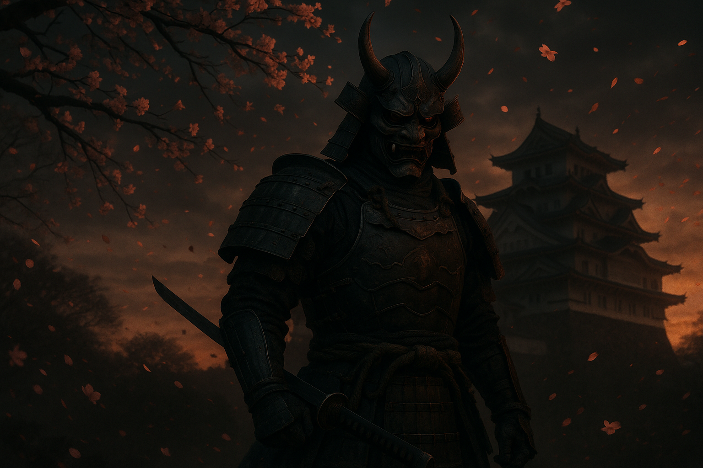

1位

鬼武者 Way of the Sword
約20年ぶりの復活を果たしたカプコンの剣戟アクションシリーズ最新作。剣豪・宮本武蔵を主人公に、人間と幻魔が共存する戦国の世を舞台に描く重厚なストーリー。敵の攻撃に合わせてパリィを決め、一瞬の隙を突いて放つ「一閃」が痛快。REエンジンによるトップクラスの映像美も圧倒的で、高難度ボス戦の緊張感は必見。ファミ通レビューでも満点近い高評価を獲得した2026年秋の大本命タイトル。
おすすめ理由：シリーズ20年ぶりの新作にして、和風アクションの最高峰。映像美・爽快感・歯ごたえが高次元で融合した傑作。